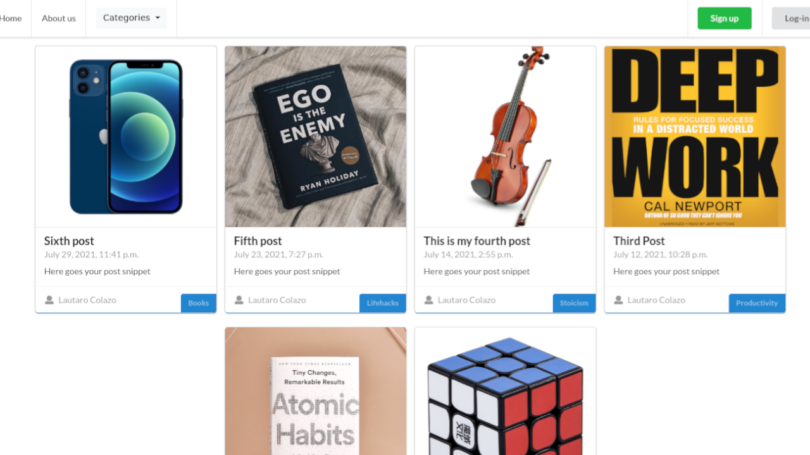

Blog with Django
Python, Django and Semantic UI
Python, Django and Semantic UI
This is a personal project where I built a full-functionality blog from scratch with Python, Django framework, and Semantic UI library.
Throughout the process, I developed a better use and understanding of Django class-based views, Django models, user authentication, CRUD practice, forms, and much more.
It was a great opportunity to improve and refine my debugging skills, as well.
The project includes:
In some points of the process I faced some challenges and I enjoyed and learned a lot developing this project. You can check out the source code on my GitHub profile here.